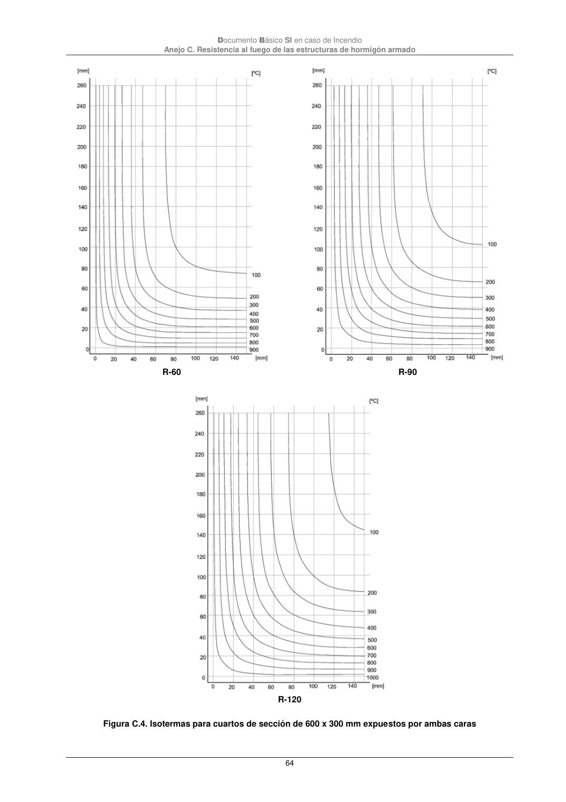
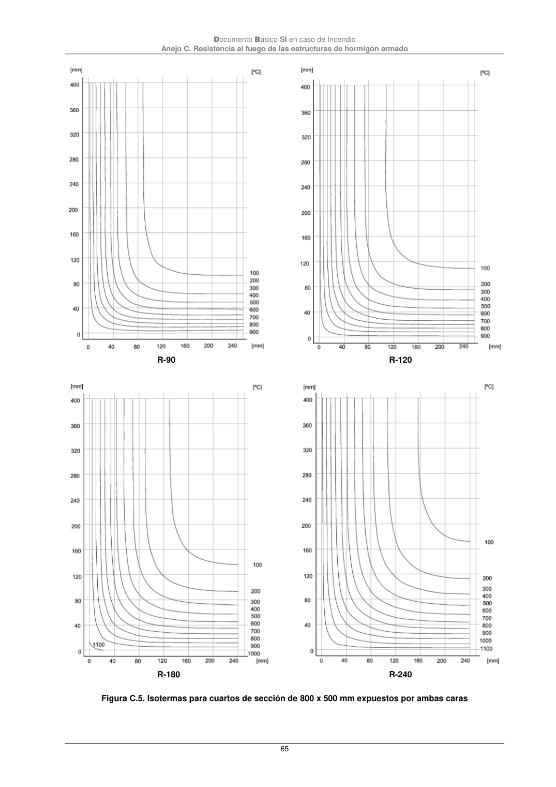

DB-SI · R-120 · versión 2025-03-04 · capa oficial
Formatos: JSON compacto · Markdown · PDF fuente
Ámbito del documento · texto del ámbito · documento y tablas
ID técnico a0175 · PDF pág. 64-65 · jerarquía no validada por persona · contrastado con el literal de la página 64 (candidato tipográfico); no validado por persona · padre: raíz
R-120 Figura C.4. Isotermas para cuartos de sección de 600 x 300 mm expuestos por ambas caras Documento Básico SI en caso de Incendio Anejo C. Resistencia al fuego de las estructuras de hormigón armado 65


PDF fuente redistribuible: copia fiel enlazada en esta página (SHA256 verificado).